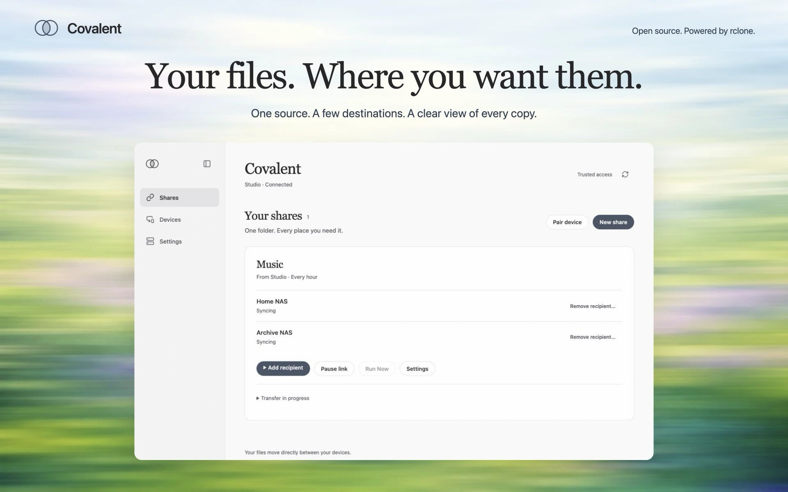
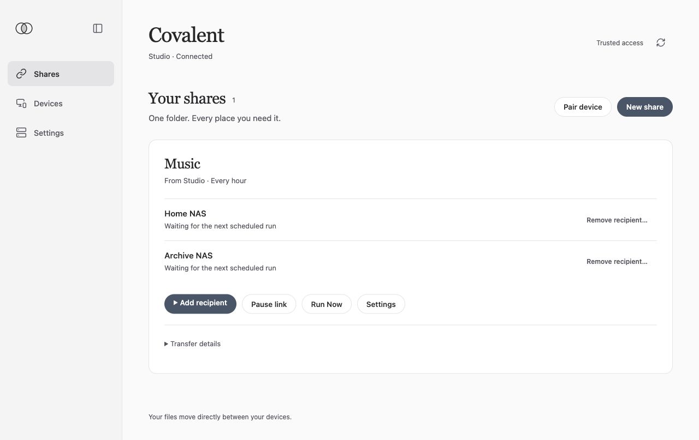
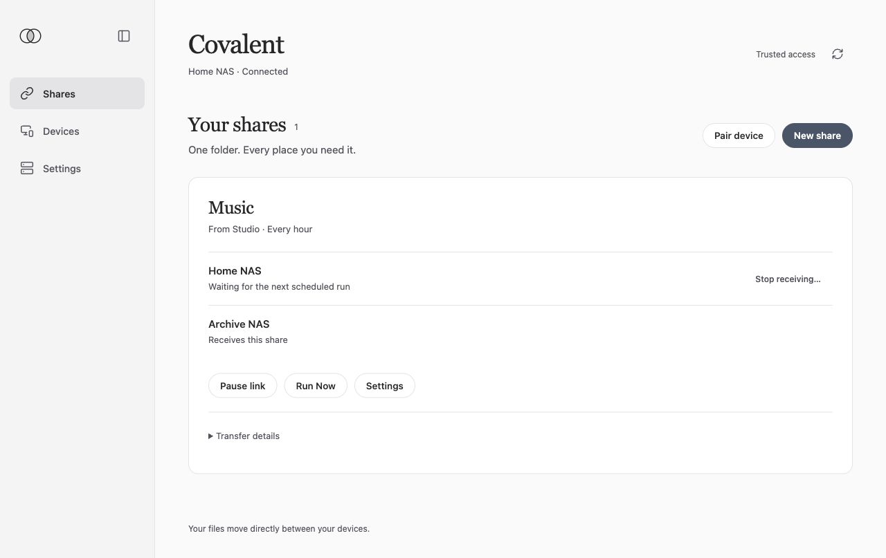
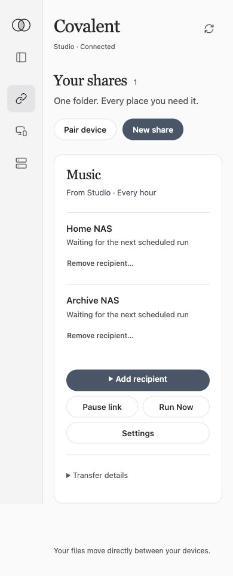
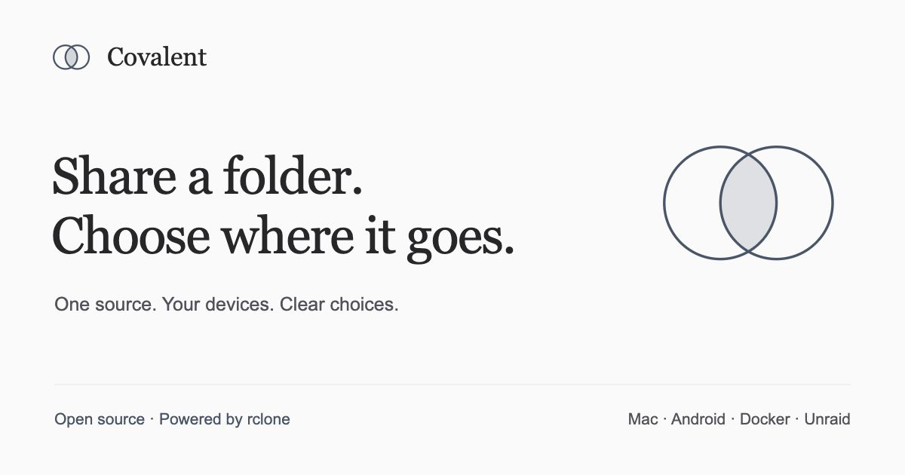

Covalent — website asset gallery
Product previews

View the five-piece preview set. Includes editable layouts and PNG/WebP exports; the phone view is mobile web.
One share, several recipients

Lead image. Current server interface with example devices and data.
Shared timing and clear deletion choices
 Use in the settings feature section. Keep the deletion explanation in view.
Use in the settings feature section. Keep the deletion explanation in view.
Add another recipient
 The form is shown before submission.
The form is shown before submission.
The same share at the receiving end

Recipients see the source and the full recipient list.
The console on a small screen

Responsive web console. This is not the native Android app.
Social preview and logo

1200 × 630 social card. Editable SVG included.